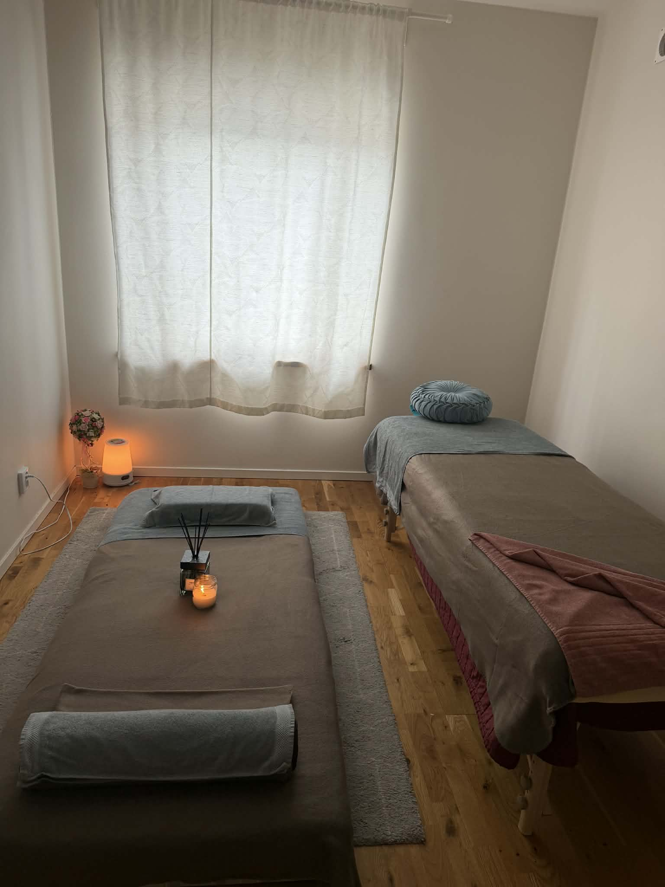

60 min
- Klassisk Svensk massage
- 600 kr
Massage i Handen
Klassisk Svensk massage i Handen
Klassisk Svensk massage är en välkänd massageform för dig som vill minska muskelspänningar, öka cirkulationen och få en tydlig känsla av återhämtning. Hos Lucky Spa Massage i Handen anpassas behandlingen efter dina behov och önskat tryck.

Vad är Klassisk Svensk massage?
Klassisk Svensk massage använder grepp som knådningar, strykningar och tryck för att arbeta igenom musklerna på ett metodiskt sätt. Behandlingen passar både dig som känner dig stel i rygg, nacke och axlar och dig som vill boka massage i Handen för allmän återhämtning och välbefinnande.
Hos Lucky Spa Massage arbetar vi lugnt och lyhört, med fokus på att behandlingen ska kännas trygg och anpassad. Klassisk Svensk massage kan vara ett bra alternativ när du vill ha en tydlig massage utan att behandlingen behöver vara lika aktiv som sportmassage.
Behandlingen passar vid vardagsstress, trötta muskler, stelhet efter arbete eller när du vill ge kroppen en regelbunden stund av återhämtning nära Handen centrum.
Så går behandlingen till
Behandlingen börjar med att du berättar var kroppen känns spänd och om du vill ha ett mjukare eller fastare tryck. Terapeuten arbetar sedan igenom musklerna med klassiska massagegrepp och anpassar tempot efter hur kroppen svarar.
Hos Lucky Spa Massage i Handen kan Klassisk Svensk massage bokas i 60 eller 90 minuter. Välj 60 minuter för en tydlig behandling eller 90 minuter när du vill ha mer tid för flera områden och djupare återhämtning.
Passar Klassisk Svensk massage första gången? Ja, det är ofta ett bra val om du vill ha en trygg och tydlig massageform som kan anpassas efter dig.
Kan jag välja fokusområde? Ja, berätta gärna om du vill fokusera på rygg, nacke, axlar, ben eller andra områden.
Priser